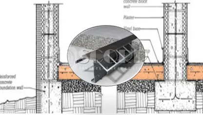

SOG (Slab On Grade)
지반 조건이 좋을 경우, 200MM 잡석다짐 후 시공하는 초평탄바닥 시공법.
크랙 최소화를 위해 시공조인트 역시 건조수축을 허용하도록 디자인함.
공기단축 및 공사비용 절감.
Jointless (Saw-Cut 문제 해결) 및 최소화 가능.
Build your business with the right way. SCORP is faithful to our own fundamentals and principles, pursues creative innovation, and leaps forward without settling for the past. We always thank you for your love and interest and promise to show you constantly developing in the field of 'Industrial Concrete Floors'.
지반 조건이 좋을 경우, 200MM 잡석다짐 후 시공하는 초평탄바닥 시공법.
크랙 최소화를 위해 시공조인트 역시 건조수축을 허용하도록 디자인함.
공기단축 및 공사비용 절감.
Jointless (Saw-Cut 문제 해결) 및 최소화 가능.
지반 조건이 좋지 않을 경우, 팽이기초 설치 후 시공하는 초평탄바닥 시공법.
크랙 최소화를 위해 시공조인트 역시 건조수축을 허용하도록 디자인함.
공기단축 및 공사비용 절감.
Jointless (Saw-Cut 문제 해결) 및 최소화 가능.
지반 조건이 좋지 않을 경우, 파일기초 설치 후 시공하는 초평탄바닥 시공법.
철근을 사용하지 않고 45KG/M3 이상의 강섬유만을 사용함.
크랙 최소화를 위해 시공조인트 역시 건조수축을 허용하도록 디자인함.
공기단축 및 공사비용 절감.
Jointless (Saw-Cut 문제 해결) 및 최소화 가능.
최대 파일 간격 5M이하 배치 권고.
바닥 구조에서 구조인장재인 철근을 대체하여 Macro Fiber를 사용하여 소성수축균열, 건조수축균열, 장기피로균열을 효과적으로 저감하는 SOG/SOT 및 Topping Slab 시공법.
바닥 구조에서 구조인장재인 철근을 대체하여 Glass Fiber를 사용하여 소성수축균열, 건조수축균열, 장기피로균열을 효과적으로 저감하는 SOG/SOT 및 Topping Slab 시공법.
바닥 구조에서 구조인장재인 철근을 대체하여 Steel Fiber 를 사용하여 소성수축균열, 건조수축균열, 장기피로균열을 효과적으로 저감하는 SOG/SOT/SOP 및 Topping Slab 시공법.
냉장 및 냉동(-25도 이하)창고로 운영되는 물류바닥에서 고품질 바닥시공은 매우 특수한 작업이다. 이는 상온창고와 달리 바닥보수가 어려우며 비용이 많이 들고, 때로는 물류운영을 중단해야하기 때문이다. 해서 계획단계에서부터 에스코프에게 바닥 관련 모든 요소에 대해 조언을 구하여야 한다.
구조슬라브 또는 바닥단열재 상부에 물리적으로 분리시키는 초평탄바닥 시공법.
Curling 방지를 위해 두께 150MM이상 확보.
인장재로는 단열의 Weld Mesh 혹은 고인장섬유 사용.
크랙 최소화를 위해 Saw Cut 디자인 적용 (ACI 디자인 권고).
구조슬라브 또는 HALF PC 상부에 물리적으로 일체화시키는 초평탄바닥 시공법.
최소두께 90MM 이상 확보 필요.
인장재로는 단열의 Weld Mesh 사용.
크랙 최소화를 위해 Saw Cut 디자인 적용 (Option : PC유형별).
AGV, VNA Truck, AMR 등 특수장비의 요구사항을 만족하는 초평탄바닥 시공법.
영국 시방 TR34 4TH Edition 만족.
미국 시방 F min Number 만족.
독일 시방 DIN 15185 Table1 만족.